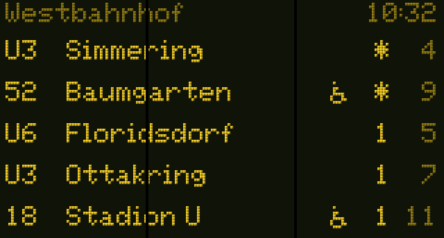

Bimfo firmware installer
Live Wiener Linien and ÖBB departures for the Waveshare ESP32-S3-LCD-1.47B. Install it straight from the browser, no software needed.

This browser can't flash a board. Open the page in Chrome or Edge on a computer.
Flashing needs a secure connection: open the page over https.
Chrome or Edge on Windows, macOS, Linux or ChromeOS. Safari, Firefox and phones can't talk to a USB serial port.
Install
- Connect the board to the computer with a USB-C data cable. The 90° cable from the enclosure works too.
- Click Install Bimfo and pick the board in the list. It shows up as
USB JTAG/serial debug unit. - New board: tick Erase device when asked.
Updating Bimfo or the earlier "Abfahrtsmonitor": leave it unticked, and the settings are kept. - When it's done, the board restarts and shows WLAN-Setup with a QR code. Scan it with your
phone and enter your Wi-Fi; then add your stops at
http://bimfo.local.
If something goes wrong
- The board isn't listed, or connecting fails: unplug it, hold BOOT, plug it in again, release BOOT, and click Install again. In the enclosure, BOOT is the tab under the box, next to the pole.
- The screen stays dark after installing: press RST (the pinhole on top of the box) or unplug the board and plug it in again.
Later updates
No cable needed. On the device's settings page under System, switch on
Automatische Updates: the device then installs new versions at night by itself. Or
download bimfo-update.bin from the releases and upload
it there. The device only accepts firmware signed with the Bimfo key, and a broken update rolls
back by itself.